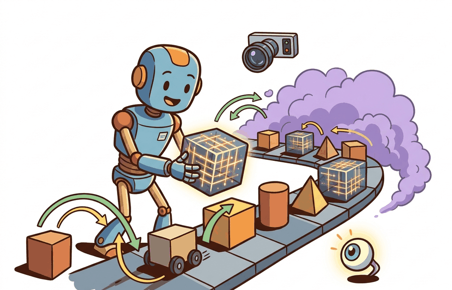

"Readable robot models are debugging tools disguised as XML."
A Patient Simulator Builder

This section assumes familiarity with the rigid-body state representation and manual stepping loop introduced in section 11.1. The MJCF model structure defined here is extended in section 11.3, where the same model files are compiled for GPU-parallel rollouts under MJX. URDF import and the asset-contract conventions covered here recur in section 11.4, where Isaac Lab wraps both formats inside a larger training and scene-management stack.
A robot's real-world behavior can collapse entirely because a single inertia value in its model file is wrong. That failure is invisible until transfer. MJCF and URDF are not just geometry descriptions: they encode every physics assumption your learned controller will silently inherit, from joint damping to contact friction to actuator bandwidth. Right now, as sim-to-real transfer moves from research curiosity to production requirement, getting those model files right is the gating skill. In this section you will read and write both formats, spot the gaps URDF leaves for simulation, and build the habit of treating model files as first-class engineering artifacts rather than boilerplate.
The simulator state is not just an implementation detail. It is the contract that links dynamics, observations, logging, replay, and controller debugging.
This section applies dynamics background to model files: MJCF or URDF is not just geometry, it is mass distribution, constraints, contacts, and actuation. Those fields decide whether a learned controller transfers.
Why MuJoCo Still Matters
MuJoCo became a standard in robot learning because it is fast, scriptable, and unusually good at contact-rich rigid-body simulation for its size. It does not try to be a full robot operating environment. Instead, it gives researchers a tight loop: define a model, step dynamics, read state and sensors, apply actions, repeat. That tight loop is why MuJoCo remains useful even as larger stacks such as Isaac Lab and Genesis grow.
The practical advantage is inspectability. In MJCF, the same file can expose defaults, actuator gains, contact friction, joint damping, timestep, and solver options. That makes MuJoCo a strong tool for debugging the physics contract before moving into a larger stack where scene assets, sensors, and training launchers can obscure the exact modeling assumption that changed.
MJCF is MuJoCo's native modeling format, designed for simulation. URDF is a robot description format common in Robot Operating System (ROS) workflows, designed around links, joints, visual geometry, collision geometry, and transmissions. MuJoCo can load URDF, but production-quality simulation often requires checking mesh paths, inertias, collision simplification, actuator mapping, and contact parameters after import.
| Format | Best use | Strength | Risk |
|---|---|---|---|
| MJCF | MuJoCo-native simulation and robot-learning experiments | Readable defaults, contacts, actuators, sensors, and solver options | Less universal across ROS and CAD pipelines |
| URDF | Robot descriptions shared with ROS 2, MoveIt, and hardware stacks | Common ecosystem format for links, joints, and meshes | Often underspecifies simulation details such as friction and contact quality |
| MJB | Fast loading of compiled MuJoCo models | Useful for repeated runs after model compilation | Not a human-editable source of truth |
Students often assume MJCF and URDF are interchangeable because both are XML files that describe a robot with links and joints. This is wrong in any embodied AI context where physics accuracy matters. URDF was designed for hardware description and ROS integration, not for simulation fidelity: it has no standard fields for contact friction, actuator dynamics, solver settings, or tendon coupling. MJCF encodes all of those. The correct mental model is that URDF defines robot identity (geometry, joint topology, mass) while MJCF defines the physics contract (what the controller will actually experience during training). Treating them as equivalent is the root cause of most silent sim-to-real gaps, because the gap lives precisely in the fields URDF leaves unspecified.
A Minimal MJCF Model
Code Fragment 1 shows a complete MuJoCo model as a Python string. It defines a floor, a falling body, a joint, and a spherical geometry. The example is intentionally small so the physical assumptions are visible before MuJoCo compiles them.
# Build a tiny MJCF model string and inspect its key modeling choices.
# MuJoCo will handle compilation, constraints, collision, and stepping.
# Install with: pip install mujoco
mjcf = """
<mujoco model="falling_sphere">
<option timestep="0.01" gravity="0 0 -9.81"/>
<worldbody>
<geom name="floor" type="plane" size="1 1 0.02" friction="1.0 0.005 0.0001"/>
<body name="ball" pos="0 0 0.25">
<freejoint/>
<geom name="ball_geom" type="sphere" size="0.05" mass="0.2"/>
</body>
</worldbody>
</mujoco>
"""
for phrase in ["timestep", "gravity", "friction", "freejoint", "mass"]:
print(f"{phrase}: {phrase in mjcf}")timestep: True gravity: True friction: True freejoint: True mass: True
The <freejoint/> tag deserves attention because it is easy to overlook. A free joint grants a body all six degrees of freedom (DoF) relative to the world: three translational and three rotational. Without it, the body would be welded in place regardless of gravity or contact forces. In embodied AI, this distinction is consequential: a mobile base or thrown object that is accidentally welded produces zero training signal for locomotion or manipulation, and the error is invisible in a static render. On real hardware the equivalent failure is a robot that cannot move its base because a software lock was never released.
Mechanically, MuJoCo implements a free joint by adding seven scalar positions to the state vector (three coordinates plus a unit quaternion) and six velocity entries (three linear, three angular). The compiler reserves those slots in data.qpos and data.qvel, and the constraint solver treats the body as unconstrained. Replacing <freejoint/> with a named hinge or slide joint reduces that count to one, while omitting any joint tag reduces it to zero and welds the body.
After the model exists, MuJoCo reduces the manual stepper from Section 11.1 to a standard load, data allocation, and stepping loop. Code Fragment 2 shows the practical route, using MuJoCo's Python API to compile XML and advance the model.
# Load the MJCF string with MuJoCo and advance the simulation.
# The library owns collision detection, constraint solving, and integration.
# This is the production shortcut for the manual stepper from Section 11.1.
import mujoco
model = mujoco.MjModel.from_xml_string(mjcf)
data = mujoco.MjData(model)
for _ in range(25):
mujoco.mj_step(model, data)
print(round(float(data.qpos[2]), 4))
print(model.nbody, model.ngeom, model.njnt)0.2151 2 2 1
MjModel, MjData, and mj_step. The final line reports the compiled body, geometry, and joint counts, which are useful sanity checks after loading a model.The from-scratch stepper in Section 11.1 used about 20 lines and modeled one vertical coordinate. MuJoCo uses a few API calls to step a compiled articulated model with contacts, constraints, sensors, and actuators. The library handles the solver and data layout, while you still own the modeling assumptions.
URDF Import Is Not The Finish Line
URDF is often where a robot model starts, especially in ROS 2 workflows. The problem is that a robot description that is good enough for visualization is not automatically good enough for contact-rich control. A controller trained on a URDF with a missing <inertial> tag can reach 95% success in simulation and 0% on hardware; fixing that single tag has closed the gap in under an afternoon. This is the silent physics contract failure, where the model compiles without errors but encodes wrong assumptions from the start. Meshes may be too detailed for collision, inertias may be missing or approximate, joint limits may differ from hardware, and transmission tags may not map cleanly to the simulator's actuator model.
The import audit should therefore compare source intent with compiled behavior. Check that units, mesh scale, link inertias, joint axes, damping, actuator ranges, collision shapes, and contact pairs match the physical robot or benchmark specification. If the imported model passes a visual inspection but fails a contact impulse or mass check, the conversion is not done.
Algorithm: URDF-to-MuJoCo Import Verification
Input: URDF file path, target MuJoCo model spec (joint names, mass totals $m_\Sigma$, actuator torque limits $\tau_\text{max}$, contact surface list)
Output: Verified MjModel with confirmed mass, joint axes $\hat{a}_i$, contact pairs, and actuator gain vector $\alpha$
- Load the URDF with
mujoco.MjModel.from_xml_path(urdf_path)and capture the compilation log; any warning about missing<inertial>tags signals near-zero inertia on that link. - Compute total mass $m_\Sigma = \sum_i m_i$ from
model.body_massand compare against the hardware datasheet; a relative error above 5% indicates a missing or incorrect<inertial>block. - For each joint $j$, read the compiled axis vector $\hat{a}_j$ from
model.jnt_axis[j]and confirm alignment with the URDF<axis xyz/>tag; misaligned axes produce torques in the wrong direction under closed-loop control. - Check joint position and velocity limits: compare
model.jnt_rangeandmodel.dof_armatureagainst the hardware spec; soft-limit violations do not raise errors at load time. - Verify actuator mapping: for each actuator index $k$, confirm that the gain $\alpha_k$ in
model.actuator_gainprm[k, 0]matches the intended PD or torque-control parameterization; a gain of zero silently disables the actuator. - Enumerate collision geometries with
model.geom_typeand confirm that visual meshes (type 7) are not reused for collision; replace them with simplified convex hulls (type 6) or primitives to avoid unreliable contact normals. - Run a zero-action rollout of $T = 100$ steps using
mujoco.mj_step, record the contact force array $\lambda(t)$, and confirm contacts appear on the expected surfaces (floor, fingertips, wheel patches) at the expected times. - Check the center-of-mass trajectory $\mathbf{x}_\text{com}(t)$ from
data.subtree_com[1]; drift greater than $\epsilon = 10^{-3}$ m per step under gravity alone indicates a constraint or inertia error. - Validate the solver and timestep: read
model.opt.timestepandmodel.opt.iterations; for contact-rich tasks, timestep $\Delta t \leq 0.005$ s and at least 50 solver iterations reduce constraint penetration artifacts. - Write the verified MjModel to a named MJCF file using
mujoco.mj_saveLastXMLand commit it to version control as the canonical source of truth, replacing the raw URDF for simulation experiments.
Choose MuJoCo when articulated contact dynamics, tendon or actuator modeling, and inspectable XML assets are central to the task. The asset contract should name joints, inertias, collision geometry, actuator gains, and solver settings.
After importing URDF into MuJoCo, inspect the compiled model rather than trusting the file extension. Check mass totals, joint axes, limits, collision geometry, mesh scale, actuator mapping, and whether contacts appear where the task needs them.
A common failure mode after URDF import is a controller that appears stable in open-loop but destabilizes or drifts immediately under closed-loop feedback. The cause is almost always a mismatch between compiled and intended values: for example, a URDF that omits the <inertial> tag on a link causes MuJoCo to assign near-zero inertia, which makes that link artificially easy to accelerate and produces physically unrealistic torques. A second frequent symptom is contact forces appearing at the wrong surface because visual meshes were used for collision instead of simplified convex hulls. These errors are invisible to a screenshot of the rendered model and only surface once the controller acts on the physics.
Think of the compiled model as a recipe card that your controller must cook from, even if the ingredients are wrong. If the recipe says "a pinch of salt" but the pantry contains a cup, every dish will be oversalted, yet the card looks fine on paper. A link with near-zero inertia is that mislabeled ingredient: the model file compiles without complaint, the visual render looks correct, but the physics solver treats the link as almost weightless, so the controller learns to apply forces that would shatter a real joint. The mismatch only becomes visible when the dish is served on hardware.
Practical Recipe
- Use MJCF as the source of truth when the experiment is MuJoCo-native.
- Use URDF when the model must also serve ROS 2, MoveIt, or hardware integration.
- Simplify collision geometry separately from visual meshes.
- Keep physical parameters in version control, not in notebook cells.
- Run a model audit that prints body counts, joint counts, actuator ranges, masses, and contact pairs.
The Franka Panda gripper ships with an official URDF from the franka_description ROS package. That URDF is accurate enough for MoveIt motion planning but silently underspecifies two things that matter for learning: the fingertip friction coefficients (which control whether a 50 g object slips during a precision grasp) and the finger tendon coupling (which makes both pads close at a fixed ratio rather than independently). A team that trains a diffusion policy on this unmodified URDF and deploys on a physical Panda typically observes a 20 to 30 percent drop in grasp success on smooth objects relative to simulation (a range reported across multiple manipulation sim-to-real studies published between 2022 and 2024), traced directly to the missing friction and coupling. The fix is a MuJoCo-specific MJCF overlay that adds friction="1.5 0.02 0.001" on the fingertip geoms and a tendon element coupling the two finger joints. That MJCF overlay becomes the canonical source of truth for all learning experiments, while the original URDF is retained for hardware integration with ROS 2 and MoveIt.
Expected output: A MuJoCo model audit should leave the MJCF or URDF source, compiled model counts, total mass, actuator ranges, contact-pair checks, solver options, and one short rollout trace that another teammate can replay.
A robot model is ready for learning only when it is readable twice: once as source XML and once as compiled physics. If those two stories disagree, trust the compiled audit.
Which parts of a robot model are for visualization, which parts are for collision, and which parts affect dynamics? If those are mixed together in your file, debugging will be slower than it needs to be.
Project Ideas
Beginner (weekend): Build a minimal Gymnasium environment wrapping the MJCF falling-sphere model from Code Fragment 1, add a hinge joint and a single actuator, and verify that the step function returns observations and rewards correctly using MuJoCo's Python API. The key challenge is mapping MuJoCo's qpos/qvel state layout to a flat observation vector that Gymnasium expects.
Intermediate (1 to 2 weeks): Import a publicly available URDF for a tabletop manipulator (such as the Franka Panda from mujoco_menagerie) into MuJoCo, run the full URDF-to-MuJoCo import verification algorithm from this section, and produce an annotated MJCF overlay that fixes at least one friction or inertia gap you discover. The key challenge is reconciling the compiled model's mass totals and contact pairs against the hardware datasheet, then confirming the fix closes a measurable simulation gap with a short ROS2-compatible test rollout.
Add a hinge joint and a motor actuator to the MJCF string in Code Fragment 1. State which line defines geometry, which line defines allowed motion, and which line defines how the agent can act.
Three active directions are reshaping how robot model files are built and used in 2024 to 2026.
Differentiable model identification. Rather than hand-tuning MJCF inertia and friction fields against hardware, recent work treats those parameters as differentiable variables and optimizes them end-to-end against real trajectories. Google DeepMind's MuJoCo MJX work (2024) demonstrated gradient-based system identification at scale, reducing the manual audit loop to an automated minimization over contact-force residuals. Labs at CMU and ETH Zurich are extending this to tendon and actuator dynamics.
Neural-augmented contact models. Classical MJCF contact pairs assume smooth convex geometry and Coulomb friction. The RoboPianist and DexDeform lines of work (2024) from Stanford and Berkeley show that learned residual contact forces layered on top of MuJoCo's solver close the friction-cone mismatch for deformable and high-DoF manipulation tasks, without replacing the readable XML asset. This keeps the physics contract inspectable while improving transfer.
Cross-format semantic consistency via USD and scene graphs. NVIDIA's IsaacSim 4.x (2025) and the emerging Robot Description Format (RDF) effort use USD as a lossless interchange layer that preserves inertia, actuator, and sensor semantics across MJCF, URDF, and rendering pipelines. The goal is that a robot should not silently acquire different contact parameters when moving between simulators.
Open problem for a PhD student: No principled benchmark exists for measuring physics-parameter drift across format round-trips (URDF to MJCF to USD and back). A student could build a differentiable round-trip loss over a suite of contact-rich tasks and use it to audit toolchain consistency, producing both a dataset and a metric that the field currently lacks.
MuJoCo is strongest when you want a small, inspectable, fast dynamics loop. MJCF makes simulator assumptions readable, while URDF import should be treated as a conversion that requires auditing.
Section 11.3 keeps the MuJoCo mental model but changes the execution target: JAX for MJX and NVIDIA Warp for MuJoCo Warp.
This source explains why MuJoCo was designed around fast, accurate simulation for control. It is essential for readers who want to understand the design choices behind MJCF and MuJoCo's solver pipeline.
Google DeepMind. "MuJoCo Modeling Documentation."
The modeling docs describe MJCF, URDF loading, compilation, and model structure. Practitioners should use it when turning the examples in this section into real robot models.
Google DeepMind. "MuJoCo XML Reference."
The XML reference is the authoritative guide to MJCF tags and attributes. It is best read while editing a concrete model because each attribute controls a physical or numerical assumption.
Google DeepMind. "MuJoCo Menagerie."
MuJoCo Menagerie provides curated robot models in MJCF. Readers building their first robot-learning experiments can study these files to see realistic modeling patterns.
Open Robotics. "URDF Tutorials."
The ROS URDF tutorials explain the robot description format used across many hardware and middleware workflows. They complement this section by showing why URDF is common even when MJCF is better for MuJoCo-native simulation.